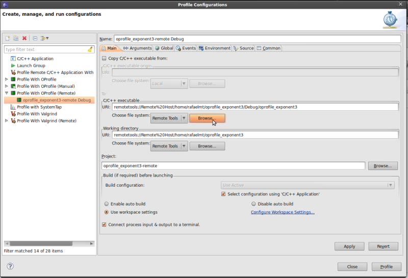

| Remote OProfile | ||
|---|---|---|
|
|
|
|
| OProfile View | Example Project | |
The OProfile plug-in allows profiling a project stored in a remote machine. This can be particularly useful when developing an application for a different architecture.
The remote OProfile plug-in doesn't have installation scripts, but requires some setup in the remote machine. First, the remote machine's user must be able to run OProfile as root. For this, log in the remote machine as root and edit the /etc/sudoers file to add the following line:
<user> ALL=(ALL) NOPASSWD: <linux-tools-path>/opcontrol
Where:
Also make sure that following line is not present or commented out:
Defaults requiretty
This is necessary for running a remote command using sudo.
To run OProfile remotely, right-click the project and navigate to "Profile As", then to "Profile Configurations". (Note: there's no One-click launch for remote OProfile). In the new window, double-click the Profile with OProfile (remote) profile configuration.
In the main tab, choose the binary that will be profiled by clicking the "Browse" button under "C/C++ executable".

The same Event Configuration Event Configuration options for regular OProfile apply for remote OProfile as well.
After configuring the profile, click the Profile button to launch the profile. The same OProfile View as the local one will show the results.
|
|

|
|
| OProfile View | Example Project |